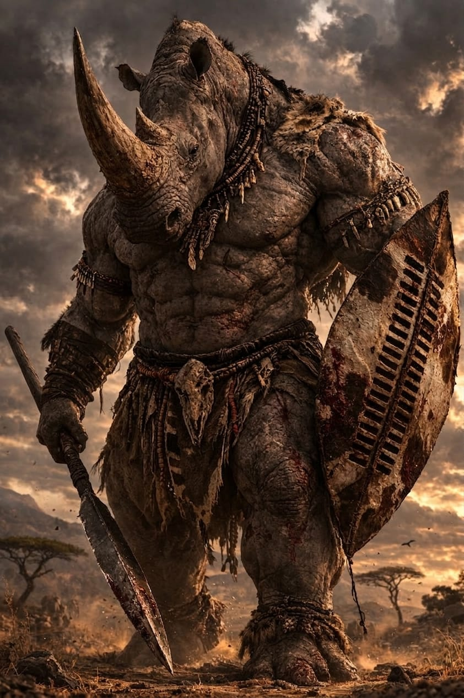

White Rhino
Ceratotherium simum
Region: Southern Africa
Habitat: Open savannas, grasslands and dry bushveld
Martial Representation: Zulu Spear-and-Shield Warfare
Weapon: Iklwa
Shield: Isihlangu
The White Rhino embodies unstoppable forward pressure, battlefield weight and brutal close-range authority. Massive, relentless and terrifying to meet head-on, it thrives through impact, intimidation and crushing armed advance. In combat, it does not dance around danger — it drives through it, forcing the opponent to survive an oncoming wall of horn, shield and spear.
Martial Discipline Overview
Zulu spear-and-shield warfare is built around disciplined advance, shield control and decisive close-range killing power. The iklwa, a short stabbing spear, works in tandem with the large isihlangu shield to close distance, smother attacks and dominate brutal mid-to-close engagements. Within WAFT, it enhances pressure, structural defense, explosive commitment and lethal finishing range.
Combat Attributes
Combat Abilities
Passive Ability
Armored Hide
Receives 10% less damage, except from Precise attacks, Explosive attacks and critical hits.
Special Attack
Piercing Gore
Deals double damage and applies Perforation, dealing 30 damage per turn for 2 turns.
Ultimate Charge: Offensive (4 hits)